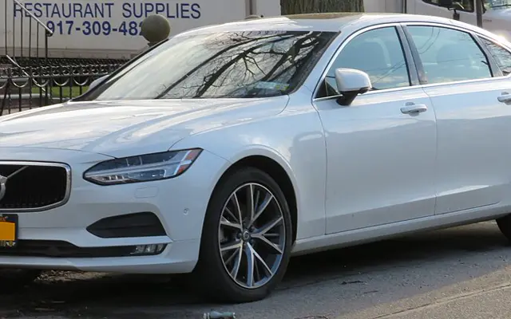

Par Motor › Precios por modelo › Volvo S90 y V90
Precio de segunda mano · noviembre de 2026¿Cuánto vale un Volvo S90 y V90 de segunda mano?

Precio justo estimado de un Volvo S90 y V90 usado en España, año por año, con los kilómetros normales para su edad y en buen estado: de 20.100 € a 66.100 €. Para tasar el tuyo con sus kilómetros reales y su estado, usa el tasador gratis.
Precios del Volvo S90 y V90 por año
S90 y V90 (2016–hoy)
Precio de nuevo: T4 2.0 190 CV, 48.000 € · D3 2.0 150 CV, 48.000 € · T8 Recharge (enchufable) 455 CV, 72.000 €
| Año | Km normales | T4 2.0 190 CV · Gasolina | D3 2.0 150 CV · Diésel | T8 Recharge (enchufable) 455 CV · Híbrido enchufable |
|---|---|---|---|---|
| 2026 | 5.000 km | 49.000 € | 47.100 € | 66.100 € |
| 2025 | 20.000 km | 40.800 € | 39.200 € | 55.100 € |
| 2024 | 35.000 km | 37.500 € | 36.000 € | 50.600 € |
| 2023 | 50.000 km | 34.500 € | 33.100 € | 46.600 € |
| 2022 | 65.000 km | 31.700 € | 28.000 € | 42.800 € |
| 2021 | 80.000 km | 28.000 € | 25.500 € | 37.800 € |
| 2020 | 95.000 km | 24.200 € | 25.000 € | 32.600 € |
| 2019 | 100.000 km | 22.500 € | 24.400 € | 30.300 € |
| 2018 | 100.000 km | 21.700 € | 23.800 € | 29.300 € |
| 2017 | 100.000 km | 20.900 € | 23.100 € | 28.200 € |
| 2016 | 100.000 km | 20.100 € | 21.400 € | 27.100 € |
Kilómetros normales: 15.000 al año en gasolina, híbridos y eléctricos, y 20.000 en diésel, con un máximo de 100.000 km (por encima no tasamos: el precio depende demasiado del historial de cada coche). Cifras redondeadas a 100 €.
Preguntas frecuentes
¿Cuánto vale un Volvo S90 y V90 de segunda mano?
Según el año, la versión y los kilómetros, un Volvo S90 y V90 usado vale hoy de 20.100 € a 66.100 € en España. El más barato de nuestra tabla es un T4 2.0 de 2016 (20.100 €) y el más caro un T8 Recharge (enchufable) de 2026 (66.100 €). Son precios justos estimados entre particulares y profesionales, con los kilómetros normales para su edad y en buen estado.
¿Cuánto valor pierde un Volvo S90 y V90 al año?
Con unos años encima, un Volvo S90 y V90 pierde alrededor de un 8 % de su valor cada año (calculado sobre el T4 2.0 de la generación S90 y V90). Los primeros años la caída es mayor y a partir de los 70.000 km se acelera.
¿Qué motorizaciones tiene el Volvo S90 y V90?
En nuestra base de datos hay versiones gasolina, diésel y híbrido enchufable, en 1 generación: S90 y V90.
¿Cómo sé si me piden demasiado por un Volvo S90 y V90?
Abre el tasador de Par Motor, elige el Volvo S90 y V90, el año y los kilómetros reales, y escribe lo que te piden. Te diremos si está por debajo del precio justo (chollo) o por encima (caro). Es gratis y no pide registro ni matrícula.
Otros Volvo
Compara su coste real
El precio de compra es solo una parte. Mira cuánto te costaría al mes con combustible, seguro, neumáticos, mantenimiento y lo que pierde de valor.
Abrir el comparador →